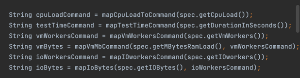
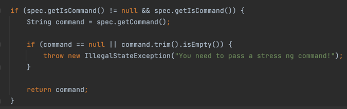
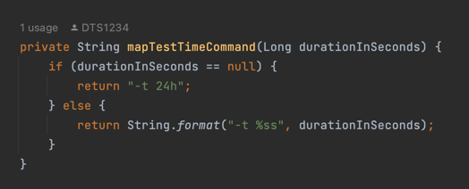
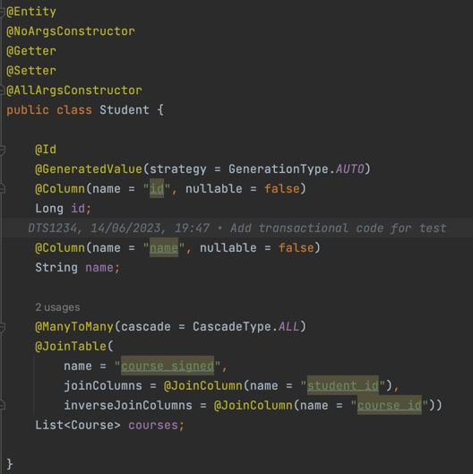
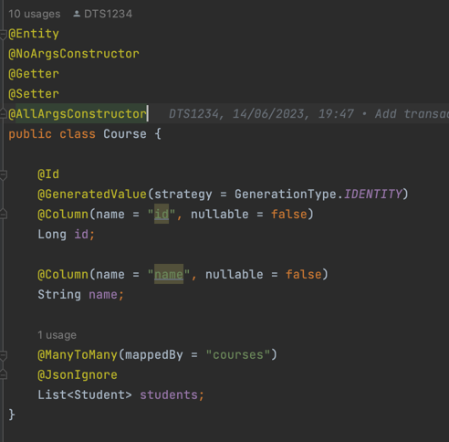
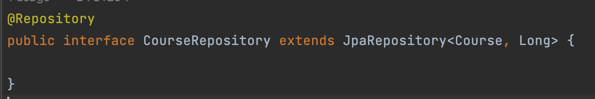

Implementation
Introduction
Cluster Probe is written in Java 17, and it uses the Spring Boot Framework. Each feature's code is stored in its own java package.
All packages expose a service class that can be injected as a dependency to the Controller, the REST api web layer class. Any error that has occurred during the test is handled by the ErrorHandler class that specifies an appropriate message and returns the error response entity.

File operations
FileOperations service is using java standard development kit libraries to implement the creation, update and the deletion for files. Those operations are performed based on the data specified in FileSystemSpecification class object.

there is only one public method implemented for the FileOperationsService all the files created will be stored under the projects directory
in the 'test' folder, then the number of files will be created based on parameters specified in the specification object.

If the fileContent parameter will be null or empty no write operations will be performed.

After all the operations are performed files and the 'test' directory are deleted:

The FileService can be invoked from the Controller class by calling an HTTP POST method.
@PostMapping("/api/file-operations")
public String createFiles(@RequestBody FileSystemSpecification spec) {
fileOperationsService.testFileSystem(spec);
return String.format("File operations performed based on spec %s", spec);
}
Here, createFiles method handles the POST request for the file-operations endpoint, accepts a FileSystemSpecification object in the request body, and
delegates the file operations logic to the fileOperationsService.
It responds with a message confirming the successful execution of the file operations based on the
provided specification.
Stress ng
In order to implement the stress ng jobs invocation, TestService creates an appropriate stress ng job based on the TestSpecification parameters,
not all parameters are required so mostly TestService class implements the logic for creating the job accurately.


for each parameter in the specification there is an according mapping method in the service class that based on whether the parameter is correct or not it
creates an appropriate part of the command. There is also an option for receiving a plain command as a string, if this one is available and
the isCommand flag is set to true the rest of the parameters will be ignored.

Whenever the durationInSeconds parameter will not be available there is a default 24 hours value set in the mapTestTimeCommand:

The TestService can be invoked from the Controller class by calling an HTTP POST method.
@PostMapping("/api/job")
public String startJob(@RequestBody TestSpecification specification) {
log.info("Received job specification: " + specification);
boolean jobStarted = testService.startJobSpecification(specification);
if (jobStarted) {
log.info("Job started for specification: " + specification);
} else {
log.error("Job failed to start for specification: " + specification);
}
return "Job started";
}
The method delegates the processing of the request to the testService by calling the startJobSpecification method and passing the specification object.
Depending on the result returned by the service layer, the method logs appropriate messages. If the job is successfully started, it logs that the job has
started. If the job fails to start, it logs an error message. The method returns a simple string message indicating that the job has started.
Transactional
In order to give the users an availability to test multiple database connections with transactional operations, a small example for the school domain have been created. It represents a classical model of a student - course many to many relationship.
The Student class represents a student in the educational domain. It is annotated with @Entity to indicate that it is a JPA entity mapped to a database
table. The class has the following attributes:
id: A unique identifier for the student, annotated with@Idand@GeneratedValueto indicate that it is the primary key and its value is automatically generated.name: The name of the student, annotated with@Columnto specify the mapping to the corresponding column in the database table.courses: A many-to-many relationship with theCourseclass, representing the courses that the student is enrolled in. The relationship is defined using the@ManyToManyannotation, and the mapping is managed through a join table named "course_signed".

The Course class represents a course offered in the educational domain. It has similar annotations and attributes as the Student class:
id: The unique identifier for the course.name: The name of the course.students: A bidirectional many-to-many relationship with theStudentclass. It is mapped by thecoursesattribute in theStudentclass using themappedByattribute of the@ManyToManyannotation. This establishes the inverse side of the relationship.

The database model for these entities can be visualized as follows:
+--------------+ +-------------------+ +------------------+
| Student | | Course | | course_signed |
+--------------+ +-------------------+ +------------------+
| id (PK) |<--->| id (PK) | | student_id (FK) |
| name | | name | | course_id (FK) |
+--------------+ +-------------------+ +------------------+
The Student and Course tables represent the entities, and the course_signed table serves as the join table for the many-to-many relationship between them.
The student_id and course_id columns in the course_signed table establish the associations between students and courses.
This database model allows for a many-to-many relationship between students and courses, enabling students to be enrolled in multiple courses, and courses to have multiple students.
In order to manipulate the database entities two different repository classes were provided.

The Spring Data JPA interfaces JpaRepository
These interfaces provide a high-level abstraction for performing common database operations on the Course and Student entities without the need for writing boilerplate code. Some benefits of using Spring Data JPA interfaces include:
- Query Methods: Spring Data JPA interfaces allow you to define custom query methods by simply declaring method signatures. The framework automatically generates the necessary SQL queries based on the method names, reducing the need for manual query creation.
- CRUD Operations: The interfaces provide methods for performing CRUD (Create, Read, Update, Delete) operations on the entities. This eliminates the need to manually write SQL statements or implement these operations yourself.
- Transaction Management: The interfaces integrate with Spring's transaction management capabilities, ensuring that database operations are performed within a transactional context.
Especially the third feature is important from the perspective of this work, as it allows us to test how multiple transactional operations will work on the system.
Both repositories are used in a SchoolService class. The SchoolService class is a Spring service component that provides business logic and acts as an
intermediary between the controller layer and the data access layer (repositories) in the application.
It exposes methods for creating students and courses (createStudent and createCourse). These methods utilize the respective
repository's save method to persist the entities in the database. The getStudents, getCourses, and getStudentsForCourse methods utilize the repository's query
methods to retrieve entities from the database. The findAll method fetches all students or courses, while findById retrieves a specific student or course based
on the provided ID. Spring manages transactions implicitly for the service methods. Each method operates within a transactional context, ensuring data
consistency and integrity.
@RequiredArgsConstructor
@Service
public class SchoolService {
private final CourseRepository courseRepository;
private final StudentRepository studentRepository;
public Student createStudent(Student student) {
return studentRepository.save(student);
}
public Course createCourse(Course course) {
return courseRepository.save(course);
}
public Student addCourseForStudent(Long studentId, Long courseId) {
Course courseFound = courseRepository.findById(courseId).orElseThrow();
Student studentFound = studentRepository.findById(studentId).orElseThrow();
studentFound.courses.add(courseFound);
return studentRepository.save(studentFound);
}
public List<Student> getStudents() {
return studentRepository.findAll();
}
public List<Course> getCourses() {
return courseRepository.findAll();
}
public List<Student> getStudentsForCourse(Long courseId) {
Course course = courseRepository.findById(courseId).orElseThrow();
return course.students;
}
public void clearAll() {
studentRepository.deleteAll();
}
}
The final implementation layer for the transactional db testing feature is a SchoolController class.
The SchoolController class is a Spring REST controller responsible for handling HTTP requests related to the school entities. It receives requests from clients, invokes the appropriate methods in the SchoolService, and returns the response.
Each method in the controller is annotated with an HTTP method mapping annotation (@PostMapping, @GetMapping). These annotations specify the URL path for the corresponding request and the HTTP method to be used.
Methods like addStudent and addCourse use the @RequestBody annotation to deserialize the request body JSON into Java objects (Student and Course, respectively).
Methods like addCourseForStudent and getAllStudentsForCourse utilize path variables (@PathVariable) to extract dynamic values from the URL path.
The controller uses a logger (slf4j) to log important information related to the incoming requests and performed operations.
The @Transactional annotation is used on the getAllStudentsForCourse method to indicate that the method operates within a transactional context. This ensures data consistency and integrity when retrieving students for a specific course.
he controller helps in separating the concerns between handling the web layer and implementing the business logic in the service layer. By using Spring annotations, the SchoolController simplifies the development of RESTful APIs and promotes the adoption of best practices in building web services.
@RestController
@RequiredArgsConstructor
@Slf4j
public class SchoolController {
private final SchoolService schoolService;
@PostMapping("/create/student")
public Student addStudent(@RequestBody Student student) {
log.info("Adding a student : " + student);
return schoolService.createStudent(student);
}
@PostMapping("/create/course")
public Course addCourse(@RequestBody Course course) {
log.info("Adding a course : " + course);
return schoolService.createCourse(course);
}
@PostMapping("/add/{studentId}/{courseId}")
public Student addCourseForStudent(@PathVariable Long studentId, @PathVariable Long courseId) {
log.info("Adding a course : " + courseId + " for student " + studentId);
return schoolService.addCourseForStudent(studentId, courseId);
}
@GetMapping("/students/all")
public List<Student> getAllStudents() {
log.info("Retrieving students ...");
return schoolService.getStudents();
}
@GetMapping("/courses/all")
public List<Course> getAllCourses() {
log.info("Retrieving courses ...");
return schoolService.getCourses();
}
@GetMapping("/courses/{courseId}/students")
@Transactional
public List<Student> getAllStudentsForCourse(@PathVariable Long courseId) {
log.info("Students for course : " + courseId);
return schoolService.getStudentsForCourse(courseId);
}
@PostMapping("/clear")
public String clearAll() {
schoolService.clearAll();
return "DB cleared";
}
}